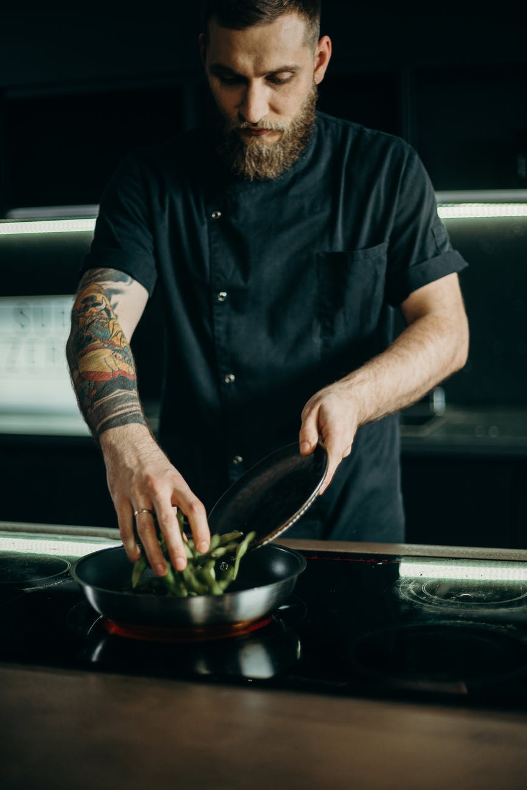
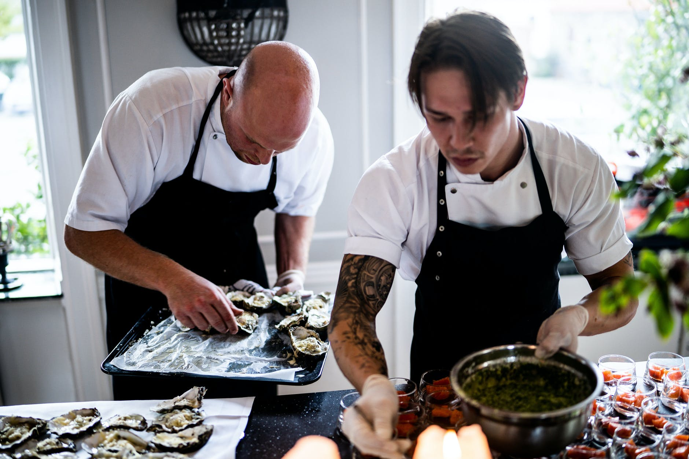
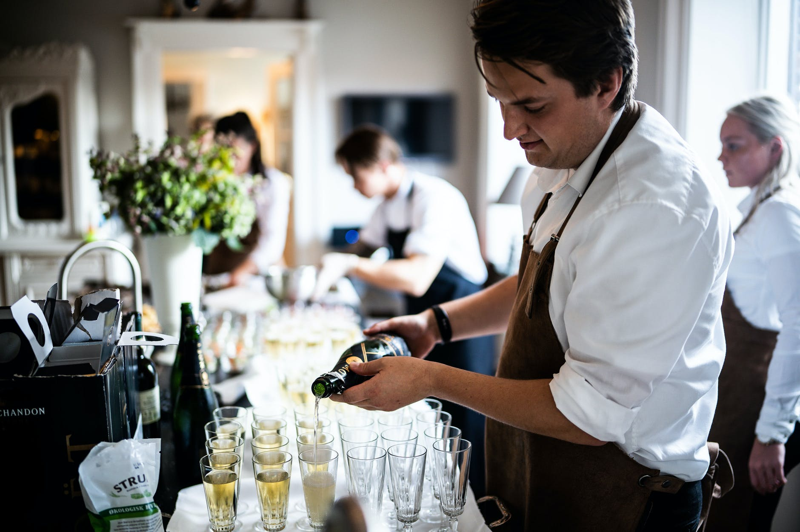

Meet the team
All of our team have been through rigourous food safety training and meet all professional standards.




All of our team have been through rigourous food safety training and meet all professional standards.